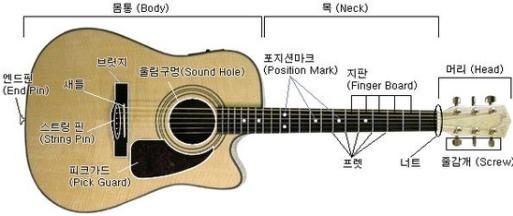

<!DOCTYPE html>
<HTML>

<HEAD>
  <title> 기타에 대해서 </title>
  <link href="https://fonts.google.com/specimen/Nanum+Gothic" rel="stylesheet" type="text/css" />

  <style type="text/css">
a {
      color: black;
      text-decoration: none;
    }

    body {
      min-width: 760px;
    }

  </style>
  <script type="text/javascript" src="https://code.jquery.com/jquery-3.3.1.js"></script>
  <script>
  $(function(){
    $(document).mousemove(function(e) {
        mouseX = e.pageX;
        mouseY = e.pageY;
        var aa = '<div id="aa" style="position:fixed;border:1px solid black;"></div>';
          $('body').append(aa);
        $('#aa').css("left", mouseX+15).css("top", mouseY+15).html("x:"+mouseX+" y:"+mouseY);
   });
   $(document).mouseleave(function(e) {
     $('#aa').remove();
  });
  });
  </script>
</HEAD>

<body>
  <p><br>
    <table style="word-break:break-all;word-wrap:break-word;" border=0 rules=cols >
      <tr>
        <th style="width:50%;">
          <h3>기타의 구조</h3>
        </th>
        <th>
          <h3 style="text-align:center;">기타는 크게 바디(body), 넥(neck), 헤드(head)의 세 부분으로 나누어진다.
    </th>
  </tr>
  <tr>
    <td style="width:50%;">

    &nbsp;&nbsp;&nbsp; 
   </td>
      <td style="vertical-align:top;text-align:left;width:50%;font-size:20px" rowspan=2>

        <pre style="word-wrap: break-word;white-space: pre-wrap;white-space: -moz-pre-wrap;white-space: -pre-wrap;white-space: -o-pre-wrap;word-break:break-all;">
  <style="font-family:'Nanum Gothic';font-size:17px;vertical-align:top;"><ul>바디
<li>엔드핀 : 기타 바디의 끝부분으로써 스트랩을 매달 수 있다.
<li>새들 : 기타 줄 높이를 조절해준다.
<li>브릿지 : 기타 바디와 현 사이의 브릿지 역할을 한다.
<li>픽가드 : 피킹스트로크 했을 때의 바디 흠집을 막아주지만 통기타의 경우 탈부착이 힘들다.
  <br  style="font-family:'Nanum Gothic';font-size:17px;">  넥
<li>프렛과 지판 : 넥을 크로매틱 스케일에 맞도록 구분한 것.
<li>포지션마크 : 초보자들이 은근 무시하기 쉬운 부분으로써 프렛을 쉽게 구분하기 위해 붙어있다.
  <br  style="font-family:'Nanum Gothic';font-size:17px;">  헤드
<li>헤드머신 : 실제 줄이 감기는 부분.

    </td>
  </tr>
</table>
</BODY>
</HTML>
